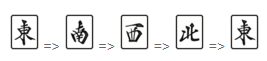
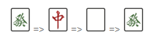
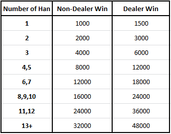

Players are dealt 13 tiles each. At the start of their turn, each player will draw a tile from the wall, or claim the discard from another player, which will temporarily give them 14 tiles. At this point, if they have a complete hand of four groups and one pair (3+3+3+3+2=14), and have a valid yaku (explained below), they can declare they have won. If the player doesn’t have a finished hand, they must discard and will go back to 13 tiles.
The core aim of a player while playing mahjong is to create a winning hand by forming sets. There are three types of set:
This is the easiest set to form, and consist of a run of three consecutive tiles of the same suit.
A triplet consists of three of the same tile.
A kan is four of the same tile.
As a kan uses up four tiles instead of the usual three for sets, to form part of a winning hand it needs to be declared, and the player receives an extra tile from the dead wall to make up for the extra tile inside the set (otherwise the player will have one too few tiles to make four sets plus one pair). A closed kan is declared by showing all four tiles, and then flipping over a tile at either end. Closed kans do not have to be called as soon as they are formed in the hand – a player can choose when to declare them, though they must be declared before the player can win.
At the start of the game all tiles are shuffled and placed in rows (called “walls”) face-down on the table (see Setting Up below, if playing with physical tiles). Once starting hands have been dealt, the dealer takes a tile from the end of the wall. He then either wins from this tile, or discards a tile of their choosing, placing the discarded tile in front of them. Discards are placed in rows in front of each player, in chronological order, and typically in rows six tiles long.
When a player discards a tile, other players may call it if they wish to use it to complete a set. A tile can only be picked up if it is the final tile in a complete set, which must be displayed face up to the side of the player’s remaining hand. Once a set is called (melded), it no longer forms an active part of the players hand and the tiles that form that meld may not be discarded or swapped. If the tile is not called, then play goes anti-clockwise, and the player to the dealer’s right then picks up a tile from the end of the wall, and will then either discard or complete their hand to win. If the tile is called, the turn switches to the player who called, and play resumes from their position, skipping any players who would otherwise have had a turn.
Play continues until either a player wins, or all tiles in the wall are dealt (except for the dead wall – the last 14 tiles in the wall), in which case the hand is drawn. If the dealer wins, or is in tenpai (one tile away from winning – a 14th tile will complete their hand) in the case of a draw, then they retain their dealership, else dealership passes to the player on their right. The first round is East round, and once all players have been dealer once (i.e. the dealer is the person who started the game as dealer initially) the game becomes South round. Typically a game will consist of
When a player discards the tile, other players may call it if it completes a set or their entire hand. There are four different types of calls for discarded tiles:
After a set has been called, the tiles are placed face-up to the right of the player who called them. The called tile is rotated so that it is sideways, and is positioned to indicate which player discarded it, e.g. if the right tile is turned sideways then it indicates the player to the right discarded it. For example, the sequence meld below indicates that the player to the left discarded the 6 sou tile in a 567 set.
A winning hand consists of 14 tiles (excluding kans), which will almost always be four sets plus one pair. A crucial condition for the player is that the winning hand must contain a yaku. A yaku is something special about the hand which increases its value. This is a key difference to Chinese mahjong and serves to stop players from winning quickly with extremely cheap hands, meaning that higher scoring hands are more plausible, increasing the strategy and excitement in the game. For beginners, the easiest to remember and aim for are:
It’s quite important for a player to become familiar with the more common yaku, and it can be extremely useful to have a list of yaku to hand to consult during the game until the player is more experienced.
Each yaku will add a multiplier to the value of the hand, known as han (or fan), which doubles the value. Some yaku are worth multiple han, and therefore can increase the hand value by 4 or 8 times.
A player can either win by the call ron or the call tsumo. Ron is the call when the winning tile is discarded by another player. This winning tile can be called regardless of which player discards it, and regardless of whether it forms a meld or completes the player’s pair. Tsumo is the call when the player draws the tile themselves out of the wall at the start of their turn.
Hands and sets can both be described as in either an open state, or a closed state.
A player’s hand is referred to as ‘closed’ if they have not made any pon, chii or open kan calls from other players. There are several yaku which are worth more if the hand is closed compared to open, and in the case of pinfu and iipeikou they are only a valid yaku if the hand is closed. A ron call does not cause a closed hand to become open for the purposes of scoring yaku. A closed hand which is won by tsumo will have one extra yaku (menzen tsumo) than the same hand won by ron.
Typically it is recommended that new players try and keep their hand closed where possible, and only call tiles when they have a clear yaku to win with. Although opening the hand by calling tiles can progress the hand more quickly, it usually restricts the player’s ability to defend and lowers the potential value of the hand, in particular as you lose the ability to riichi.
In contrast to the hand, sets are considered open if any tile within that set was not self-drawn by the player. For example the yaku Sanankou (three closed triplets) is only valid if all three triplets were entirely drawn by the player – a ron call on the last triplet will count that triplet as open and it cannot be considered for the yaku.
Riichi is the most distinguishing aspect of riichi mahjong from other variants, hence the name. If a player has an entirely closed hand (he hasn’t called any tiles from other players), and is in tenpai (can win with just one more tile), then they have the option to declare riichi. To call riichi, the player must call it right before they discard a tile, place a 1000 points stick out in front of their hand, and turn the tile they discard sideways to indicate when riichi was called. From this point onward they are essentially playing on autopilot, and they cannot change their hand in any way. The player picks up a tile on his turn, and if it is not his winning tile, he must discard it. The only exception to this is that the player can turn any closed triplet into a closed kan, providing it does not change the tile(s) they are waiting on to win.
A player who has called riichi can only call ron on their first opportunity. They cannot wait for their winning tiles to be discarded by specific players if they have already been discarded by somebody else (see furiten below).
While the disadvantages of riichi can seem worse than the advantages, the additional yaku and reverse dora are generally far more valuable, and it is usually more beneficial for the player to call riichi than to not, unless they have a hand which would be worth a lot regardless, or another player may have a high-value hand which would be bad to deal into.
The final main difference between riichi mahjong and other variants is the presence of dora. The dora is indicated by a face-up tile in the dead wall, which will mark the next tile in the suit as the dora. For example, if the face up tile is 3 sou, then 4 sou is the dora tile. A 9 tile indicates the 1 tile of the same suit, so 9 pin would indicate 1 pin as the dora. Winds and Dragons cycle as follows:
(This can be remembered by being the same order as the direction of play)
(This can be remembered by being the alphabetical order of green, red, white)
If a tile is a dora, it retains the exact same behaviour during the game as it would otherwise. However, after a player has won, each dora tile contained in their hand will give the player one han. Importantly however, dora do not count towards a hand being allowed to win – they do not count as yaku.
Some variants of mahjong have red fives in play. One 5 sou, one 5 man and one 5 pin will be coloured entirely red, and these red fives are one dora. Again, they do not count as yaku, and only make a difference after the hand has won.
After the hands have been dealt, the dora indicator is flipped over. Extra tiles can be dora during the game if people declare kans, which cause a second additional indicator to be flipped over. If both indicators are the same, then each indicated tile would be be two dora instead of one. If the dora is a five, then any red five would be two dora – both the red dora and the indicated dora.
If a player wins after declaring riichi, then the tiles in the wall under any displayed dora indicators also become indicators themselves (called ura-dora), doubling the number of possible dora for the winning player. This is one of the main advantages of declaring riichi.
A key aspect of strategy in mahjong is the furiten rule. If a player is in furiten they may not call a ron (ie. win) from another player’s discard. However, they may still win by tiles they draw themselves.
It is worth noting that furiten is a state applied to the player, not to a specific tile. If a player is in a furiten state, they cannot win on any tile, even if the tile that places the player in furiten is not the tile they would like to win on. For example if a player is waiting on a 3 or 6 sou to complete their hand, and have previously discarded a 3 sou, then they are in furiten and cannot make ron calls on either the 3 sou ‘or’ the 6 sou.
Furiten allows players greater defence against dealing into winning hands, as they can be sure that any tile which the player has previously discarded is safe from being that player’s winning tile (though other players can still win with it!).
Furiten only affects the ron call. Tiles which have previously been discarded can still be used for chii, pon and tsumo calls as usual. Calling ron with a hand that is in furiten is penalised with a chombo penalty (or, for online mahjong clients, the game usually just won’t let you win). Chombo penalties are handled differently depending on the specific rules being played to.
It is also worth noting that tiles which have been discarded and called by another player still count towards furiten discards. For this reason called tiles are typically rotated and placed to indicate the seating of the player that discarded them (left tile is rotated for player to the left, right tile to the right, middle tile for opposing player).
Scoring is a complicated aspect of the game, and unless playing with physical tiles, the computer will do it for you. Guides already exist on how to score in detail. As a rule of thumb, the following chart is good enough for beginners to estimate what a winning hand will be worth:
As is indicated in the chart, hands won by the dealer are typically worth 50% more than hands won by a non-dealer player. If the player wins by ron, then the points for the winning hand are paid by the player who discarded the final tile (this penalty places a high emphasis in riichi mahjong for not discarding other players’ winning tiles!). If the player draws his winning tile himself, and wins by tsumo, then the score is shared by the other three players. These payments are split equally if the dealer wins, and not equally if a non-dealer wins, with the dealer paying half of the value and the two other non-dealer players each paying one quarter.
A fairly common but optional rule is that if no players are over 30,000 points by the end of South, then the game will continue into West round, and keeps going until any player gets above 30,000 points.
It is worth noting that the conditions for ending the game will depend on the exact rules being played to. For example EMA Tournament rules will allow players to continue with negative points, and the game ends at the end of South round regardless of the score situation.
While this is the first thing required before playing, I’ve left it at the bottom of the guide because it’s not as important for every single player to know how to set up the game (and for online clients it’s not required at all). It’s also a bit confusing to understand in text compared to when the tiles are physically in front of you, but I’m putting it in for completeness.
For the first round, one of each wind tile is taken out of the set and placed face down on the table. These are then shuffled and each player takes a tile to decide the seating order and dealer. East takes his seat first as dealer, with North to his left, South to his right, and West opposite (note that this forms a ‘Heavenly Compass’, with East and West swapped compared to standard compass directions on the ground). The wind tiles are then placed back onto the table with the rest of the tiles, which are placed face-down and shuffled.
Once the tiles are shuffled, each player forms a wall in front of them which is two tiles high, and seventeen tiles long, keeping the tiles face down. Once each player has built their wall, these are pushed together at the centre of the table to form a rough square.
When this square is formed the dealer, East, takes the dice and rolls them inside the square. He then counts, starting with his own wall being 1, anticlockwise around the square (for example, 5 points back to East’s wall, 7 points to West’s and 12 points to North’s) to decide the wall that he will deal from. Once the wall is chosen, the player sat at that wall then rolls the dice. The total of the two dice rolls is then counted from the right hand side of the wall, from the player’s point of view. He then takes the four tiles (in a 2 by 2 block) to the left of that point and deals them to himself. Then he takes the next four and deals them to South, and continues in this way clockwise around the wall and anticlockwise around the table until each player has 12 tiles. He then deals a single tile to each player.
Once the tiles have been dealt, the 14 tiles (2×7) to the left of the point at which the wall was broken form what is known as the dead wall. The top tile, 3 from the right hand side of this is then flipped over to become the dora indicator.
East then starts play by picking up his tile from the wall, at the point where he finished dealing the tiles (East can take this tile while dealing if he wishes). He then discards a tile, and play continues as described above until somebody wins, or all the tiles except for those in the dead wall have been dealt, at which point the game is drawn. Once the game has been won or drawn, all the tiles are shuffled and the wall and dealing proceeds as for the first round, with dealership having been passed on if required.